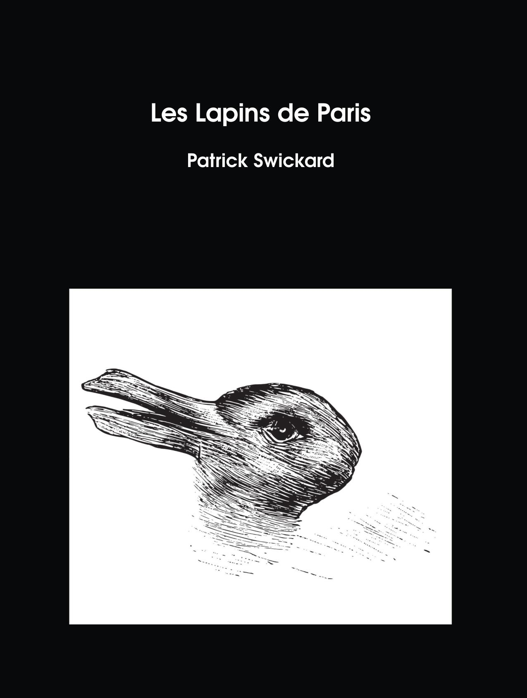
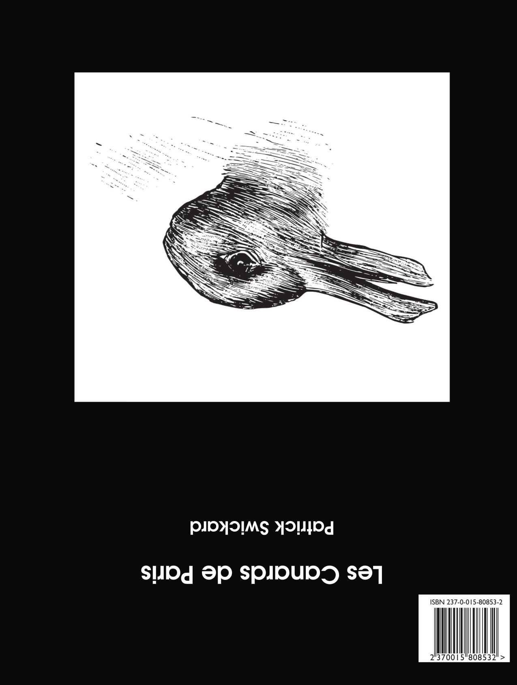

Les Lapins de Paris/Les Canards de Paris
Patrick Swickard
8.5"x11" paperback, 136 pages
Mon petit lapin a bien du chagrin
Il ne saute plus dans son petit jardin
Mon petit lapin a bien du chagrin
Il ne saute plus dans son petit jardin
Saute, saute, saute mon petit lapin
Danse, danse, danse dans ton petit jardin
Saute, saute, saute mon petit lapin
Et dépêche-toi d'embrasser quelqu'un...
Images taken in Paris, France, in April of 2024. This double volume has images of rabbits in the front. Flip it over and read from the back and it’s all images of ducks.
I was inspired to make this because Paris is weirdly full of rabbit and duck imagery, which is especially noticeable around Easter. For example, many of the warning signs on the Metro feature bad things happening to rabbits who ignore the safety warnings—rabbits falling onto tracks, getting squashed by doors, etc. And that’s only the beginning. Ducks are also all over the place—rubber ducks (vibrating and otherwise) adorn the sex shop windows. I decided to gather these all in one place to capture this aspect of the city.
Note that an English language version of this same book is also available, Ducks of Paris/Rabbits of Paris, which features ducks in the front and rabbits in the back.